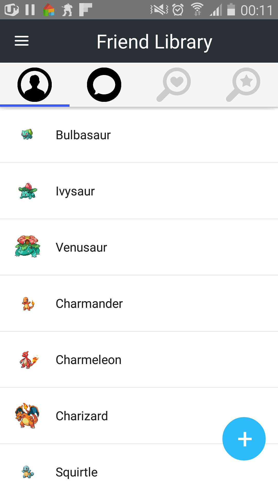

데이터를 얻을 시스템 : Friend Library App 세부구성
로그인화면 기능

유저가 아이디와 패스워드를 입력하고 로그인 버튼을 누르면, 시스템은 아이디와 패스워드 일치여부를 확인한다. 일치했을 때는, 시스템이 유저의 로그인화면을 홈화면으로 리다이렉트한다. 일치하지 않았을 때는, 시스템이 패스워드 오류를 메시지를 출력한다.
유저가 아이디 또는 패스워드를 입력하지 않고 로그인 버튼을 눌렀을 때, 시스템은 아이디와 패스워드를 입력하라는 메시지를 출력한다.
유저가 회원가입 버튼을 터치했을 때, 시스템은 유저의 로그인화면을 회원가입화면으로 리다이렉트한다.
홈화면의 기능

-
유저가 왼쪽 상단의 박스를 터치하면, 시스템이 drawer를 연다.

-
유저가 상단의 첫번째 탭을 터치하면, 시스템이 탭아래쪽에 친구리스트를 보여준다.
-
유저가 상단의 두번째 탭을 터치하면, 시스템이 탭아래쪽에 채칭리스트를 보여준다.

-
유저가 상단의 세번째 탭을 터치하면, 시스템이 탭아래쪽에 친구매팅옵션들을 보여준다.

-
유저가 상단의 네번째 탭을 터치하면, 시스템이 탭아래쪽에 아이디어리스트를 보여준다.

-
유저가 아이디와 패스워드를 입력하고 로그인 버튼을 누르면, 시스템은 아이디와 패스워드 일치여부를 확인한다.
일치했을 때는, 시스템이 유저의 로그인화면을 홈화면으로 리다이렉트한다.
일치하지 않았을 때는, 시스템이 패스워드 오류를 메시지를 출력한다.
유저가 아이디 또는 패스워드를 입력하지 않고 로그인 버튼을 눌렀을 때, 시스템은 아이디와 패스워드를 입력하라는 메시지를 출력한다.
유저가 회원가입 버튼을 터치했을 때, 시스템은 유저의 로그인화면을 회원가입화면으로 리다이렉트한다.
-
drawer의 기능
[구현예정] : 기능추가 및 아이콘 변경 이후 이미지 수정필요

-
유저가 drawer를 오른쪽에서 왼쪽으로 드래그하면, 시스템이 drawer를 닫는다.
-
유저가 에니어그램 터치하면, 시스템이 유저홈페이지에서 에니어그램테스트 페이지로 리다이렉트한다.

유저가 유저블로그 카테고리를 터치하면, 시스템이 현재 유저가 있는 페이지에서 유저블로그 페이지로 리다이렉트한다.
[구현예정] : 결과 이미지 문서화 필요
유저가 설정 카테고리를 터치하면, 시스템이 현재 유저가 있는 페이지에서 설정 페이지로 리다이렉트한다.
[구현예정] : 결과 이미지 문서화 필요
유저가 사진이미지를 터치하면, 시스템이 현재 유저가 있는 페이지에서 유저정보 페이지로 리다이렉트한다.
[구현예정] : 결과 이미지 문서화 필요
-
친구리스트 기능
친구추가 기능
유저가 하단의 +버튼을 클릭하면, 시스템이 id로친구추가하기 버튼을 보여준다.

id로 친구추가버튼 기능
[구현예정] : 친구추가 모달창 작성
친구선택 기능
유저가 하단의 친구리스트에서 친구를 클릭하면, 시스템이 Home버튼과 Chat버튼을 보여준다.

Chat버튼 기능
유저가 Chat버튼을 터치한다.
시스템이 친구이름으로 된 타이틀의 채팅방을 새로 만든다.
시스템이 친구이름으로 된 타이틀의 채팅방의 인덱스를 채팅방서비스에 저장한다.
시스템이 현재페이지에서 채팅방 페이지로 리다이렉트 한다.
시스템이 채팅방서비스의 선택된 채팅방의 인덱스를 참조하여 채팅방을 보여준다.

[구현예정] : 블로그 페이지
Home버튼 기능
유저가 Home버튼을 터치한다.
시스템이 친구이메일을 블로그서비스에 저장한다.
시스템이 유저블로그데이터베이스에서 친구이메일을 참조하여 친구의 최근 글을 불러온다.
시스템이 블로그서비스에 친구의 최근 글들을 저장한다.
시스템이 현재페이지에서 블로그페이지로 리다이렉트 한다.
시스템이 블로그서비스의 선택된 친구의 최근 글을 참조해서 블로그를 보여준다.
[구현예정] : 친구블로그 페이지 리다이렉트 이미지 문서화